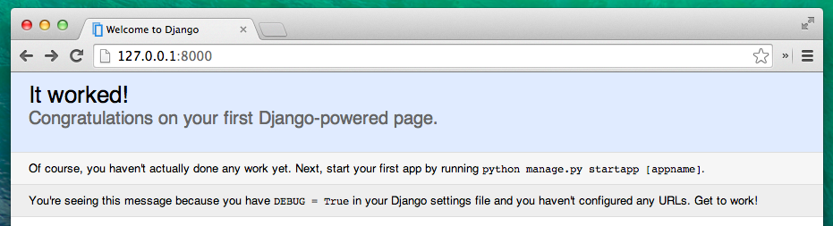

Votre premier projet Django !
Note : ce chapitre est en partie inspiré d'un autre tutoriel réalisé par les Geek Girls Carrots (https://github.com/ggcarrots/django-carrots).
Des morceaux de ce chapitre sont inspirés du tutoriel django-marcador, disponible sous licence Creative Commons Attribution-ShareAlike 4.0 International. Le tutoriel django-marcador a été créé par Markus Zapke-Gründemann et al.
Nous allons créer un petit blog !
La première étape consiste à démarrer un nouveau projet Django. En gros, cela veut dire que nous allons lancer quelques scripts fournis par Django qui vont créer un squelette de projet Django. Il s'agit de fichiers et de dossiers que nous utiliserons par la suite.
Il existe certains fichiers et dossiers dont les noms sont extrêmement importants pour Django. Il ne faut pas renommer les fichiers que nous sommes sur le point de créer. Ce n'est pas non plus une bonne idée de les déplacer. Django a besoin de maintenir une certaine structure pour retrouver les éléments importants.
N'oubliez pas de tout exécuter dans votre virtualenv. Si vous ne voyez pas le préfixe
(myvenv)dans votre console, vous avez besoin d'activer votre virtualenv. Nous vous avons expliqué comment faire ça dans le chapitre Installation de Django, dans la partie Travailler avec virtualenv. Tapezmyvenv\Scripts\activatedans votre console Windows ousource myvenv/bin/activatedans celle de Mac OS ou Linux afin d'activer votre virtualenv.
Retournons à la création de notre premier projet. Tapez la commande suivante dans votre console MacOS ou Linux. N'oubliez pas le point .à la fin :
(myvenv) ~/djangogirls$ django-admin startproject mysite .
Pour les utilisatrices de Windows, tapez la commande suivante. N'oubliez pas le point . à la fin :
(myvenv) C:\Users\Name\djangogirls> django-admin startproject mysite .
Le point
.est très important : c'est lui qui permet de dire au script d'installer Django dans votre répertoire courant (le point.est une référence abrégée à celui-ci).Note : lorsque vous tapez les commandes précédentes dans votre console, vous ne devez recopier que la partie qui commence par
django-adminoudjango-admin.py. Les(myvenv) ~/djangogirls$et(myvenv) C:\Users\Name\djangogirls>du tutoriel sont là pour vous rappeler que ces commandes doivent être tapées dans votre console.
django-admin.py est un script qui crée les dossiers et fichiers nécessaires pour vous. Vous devriez maintenant avoir une structure de dossier qui ressemble à celle-ci:
djangogirls
├───manage.py
└───mysite
settings.py
urls.py
wsgi.py
__init__.py
manage.py est un script qui aide à gérer le site. Il permet notamment de lancer un serveur web sur notre ordinateur sans rien installer d'autre.
Le fichier settings.py contient la configuration de votre site web.
Vous vous souvenez de l'histoire du postier qui livre des lettres ? urls.py contient une liste de patterns d'urls utilisés par urlresolver.
Ignorons les autres fichiers pour l'instant, nous n'allons pas avoir besoin d'y toucher. La seule chose à retenir est qu'il ne faut pas les supprimer par accident !
Changer la configuration
Apportons quelques changements à mysite/settings.py. Ouvrez le fichier avec l'éditeur de code que vous avez installé tout à l'heure.
Ça serait sympa d'avoir l'heure correcte sur notre site Web. Allez sur wikipedia timezones list et copiez le fuseau horaire qui correspond le mieux à l'endroit où vous vous trouvez (TZ). (par exemple: Europe/Paris)
Dans settings.py, recherchez la ligne qui contient le TIME_ZONE et modifiez-la pour choisir votre propre fuseau horaire :
TIME_ZONE = 'Europe/Paris'
En remplaçant "Europe/Paris" par la valeur appropriée
Nous allons aussi devoir ajouter un chemin d'accès pour les fichiers statiques (nous en apprendrons plus sur les fichiers statiques et CSS plus tard dans le tutoriel). Allez jusqu'à la fin du fichier et juste en dessous de la ligne STATIC_URL, ajoutez-en une nouvelle avec STATIC_ROOT :
STATIC_URL = '/static/'
STATIC_ROOT = os.path.join(BASE_DIR, 'static')
Quand DEBUG est à True et ALLOWED_HOSTS est vide, les ordinateurs qui sont autorisés à servir notre site web sont ceux de la liste ['localhost', '127.0.0.1', '[::1]']. Plus loin dans ce tutorial, nous allons déployer le site web sur PythonAnywhere, donc nous allons anticiper un peu et ajouter le nom de domaine correspondant :
ALLOWED_HOSTS = ['127.0.0.1', '<your_username>.pythonanywhere.com']
Configuration de la base de données
Il existe tout un tas de systèmes de gestion de bases de données qu'il est possible d'utiliser pour stocker les données de votre site. Nous allons utiliser celui par défaut : sqlite3.
Il est déjà configuré dans cette partie de votre fichier mysite/settings.py:
DATABASES = {
'default': {
'ENGINE': 'django.db.backends.sqlite3',
'NAME': os.path.join(BASE_DIR, 'db.sqlite3'),
}
}
Pour créer la base de donnée de notre blog, il faut lancer la commande suivante dans la console : python manage.py migrate (vous avez besoin d'être dans le dossier djangogirls qui contient le fichier manage.py). Si tout se passe bien, vous devriez voir quelque chose comme ça:
(myvenv) ~/djangogirls$ python manage.py migrate
Operations to perform:
Synchronize unmigrated apps: messages, staticfiles
Apply all migrations: contenttypes, sessions, admin, auth
Synchronizing apps without migrations:
Creating tables...
Running deferred SQL...
Installing custom SQL...
Running migrations:
Rendering model states... DONE
Applying contenttypes.0001_initial... OK
Applying auth.0001_initial... OK
Applying admin.0001_initial... OK
Applying contenttypes.0002_remove_content_type_name... OK
Applying auth.0002_alter_permission_name_max_length... OK
Applying auth.0003_alter_user_email_max_length... OK
Applying auth.0004_alter_user_username_opts... OK
Applying auth.0005_alter_user_last_login_null... OK
Applying auth.0006_require_contenttypes_0002... OK
Applying sessions.0001_initial... OK
Et voilà ! Il ne reste plus qu'à lancer le serveur et voir si notre site web fonctionne !
Pour cela, vous avez besoin d'être dans le dossier qui contient le fichier manage.py (le dossier djangogirls). Dans votre console, vous pouvez lancer le serveur en tapant python manage.py runserver:
(myvenv) ~/djangogirls$ python manage.py runserver
Si vous utilisez Windows et que vous obtenez l'erreur UnicodeDecodeError, tapez plutôt cette commande :
(myvenv) ~/djangogirls$ python manage.py runserver 0:8000
Ensuite, il ne nous reste plus qu'à vérifier que votre site fonctionne. Pour cela, ouvrez votre navigateur (Firefox, Chrome, Safari, Internet Explorer, ou n'importe quel autre), et entrez l'adresse suivante :
http://127.0.0.1:8000/
Tant qu'il sera lancé, le serveur web va monopoliser votre console. Pour pouvoir taper de nouvelles commandes pendant que le serveur tourne, ouvrez une nouvelle console et activez à nouveau votre virtualenv. Pour arrêter votre serveur web, retournez dans la console où il se trouve et appuyez sur CTRL+C : maintenez les boutons Control et C enfoncés en même temps. Sous Windows, vous devrez peut-être appuyer sur CTRL+Arrêt défil.
Bravo ! Vous venez de créer votre premier site web, et de le lancer avec un serveur web ! C'est génial, non?

Prête pour la suite ? Il est temps de créer du contenu!